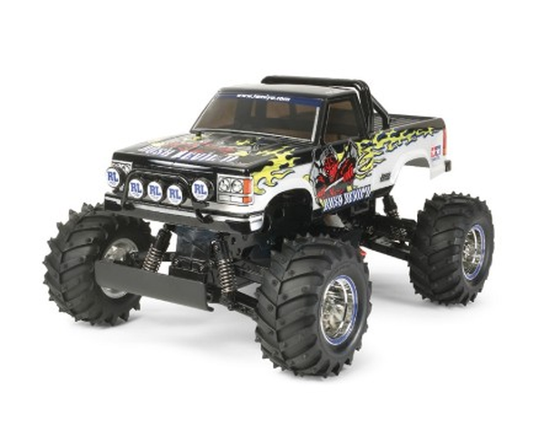

タミヤ WT-01

引用元画像：タミヤ公式サイト
📋 基本情報
| メーカー | タミヤ（Tamiya） |
|---|---|
| 機種名 | WT-01 |
| 型番 | 58514（マッドファイター）など |
| 発売時期 | 2011年8月24日 |
| 価格 | 11,880円（ストリートバギー、2012年発売） |
| 生産状況 | 生産終了（一部ネットや模型店で手に入る可能性あり） |
| カテゴリー | ラジコンカー（1/10スケール 電動RCカー） |
| サブカテゴリー | ビッグタイヤトラック（オフロード） |
📏 シャーシスペック
| 全長 | 445mm |
|---|---|
| 全幅 | 310mm |
| 全高 | 238mm |
| ホイールベース | 281mm |
| トレッド | 前後とも250mm |
| タイヤ幅/径 | 前後とも60/130mm |
| フレーム | ポリカーボネート製モノコックタイプ |
⚙️ 駆動系
| 駆動方式 | 後輪駆動（2WD） |
|---|---|
| デフギヤ | 3ベベルギヤ（密閉式ギヤボックス内蔵） |
| ギヤ比 | 18.3:1 |
| モーター | 540タイプ |
| ギヤボックス | 密閉式、組み立て済み |
🔧 サスペンション
| 形式 | 前後ともダブルウィッシュボーン4輪独立 |
|---|---|
| ダンパー | 前後ともフリクション |
| ステアリング | 車体中心線上にサーボ配置 |
💡 特徴
スリムで高剛性なシャーシ
- ポリカーボネート製モノコックフレーム（強度と軽量性を両立）
- ビッグタイヤの存在感を演出するスリムな形状
- バッテリーとモーターを中央寄りに搭載（好バランス）
高い走破性
- 直径130mmのラグパターンピンスパイクタイヤ
- グリップ力とショック吸収性に優れたタイヤ
- ダブルウィッシュボーン4輪独立サスペンション
優れた整備性
- フレームを分解せずにギヤボックスが取り外し可能
- 密閉式ギヤボックス（砂や小石の侵入を防止）
- 組み立て済みギヤボックス
派生モデル
- WT-01N（ナロートレッドタイプ、ホイールベース281mm）
🔧 ぽすとそに工房での修理実績
修理難易度
★★★★☆（かなり古いシャーシなので、パーツが見つからない可能性もあります。）
よくある故障・注意点
- モノコックフレームの亀裂や破損
- サスペンションアームの経年劣化
- ビッグタイヤの消耗
- パーツ入手がやや困難（生産終了から10年以上経過）
修理のポイント
- フレームの歪みや亀裂チェック
- ギヤボックスの密閉状態確認
- サスペンションの動作確認
- デフギヤの点検
その他の特徴
- ポリカーボネート製ボディ（軽量で耐衝撃性）
- メッキホイール採用
- オフロードをダイナミックに走破